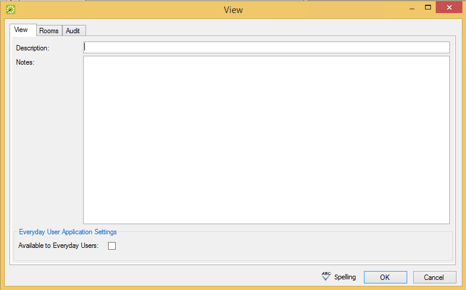
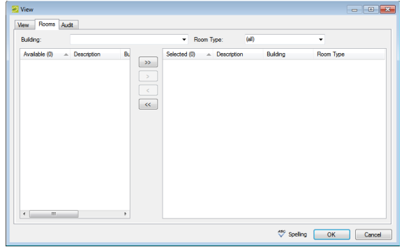

Configure Public Views
A public view, or simply a view, is a grouping of specific rooms that you configure. You use views to organize rooms within one building or across multiple buildings in a manner that makes sense for your organization. For example, you might create a view that includes only the training rooms across all your locations, or you might create a view to manage heavily used conference rooms within a building. A room can be part of multiple views. A user can select a view for changing the information that is displayed in the Reservation Book or for searching for rooms in the Reservation Wizard. A view can also be particularly useful for running reports.
- On the menu bar, navigate to Configuration > Facilities > Public Views. The Public Views window opens. This window lists all the views that are currently configured in your database.

- Click New. The View dialog box opens. The View tab is the active tab.

Tips: In the Description field, enter a name or description for the new view (maximum 50 characters, including spaces). In the Notes field, you can enter any other pertinent information about the view. If you want users to have read-only access to the view, select Available to Everyday Users.
- Open the Rooms tab.

- Enter any combination of the following search criteria:
- On the Building dropdown list, select one of the following: (all) buildings, a specific building, a specific area, or a specific view. If the appropriate building, area, or view is not listed, you can configure it. See Configuring Buildings, Configuring Areas, or Configuring Public Views.
- On the Room Type dropdown list, select a specific room type. If the appropriate room type is not listed, you can configure it. See Configuring Room Types.
- On the Available list, select the room (CTRL-click to select multiple rooms) you want included in the view, and then Move (>) to the Selected list.
Tip: You can click Spelling to spell check the view description before you save the view.
- Click OK to return to the Public Views window where your newly configured view is now listed.